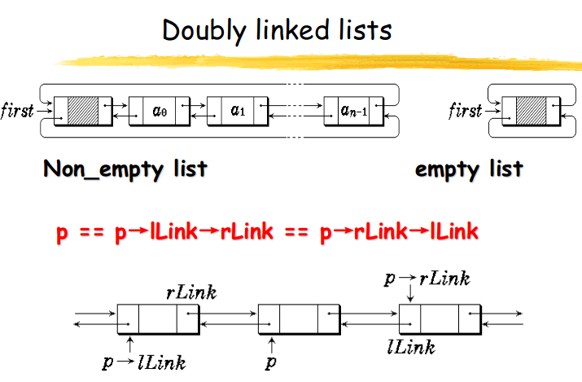

Linked List
1. Introduction
An data item plus its pointer is called a node
A node contains data item and one or more links.
The link is a reference to a node.
The link of last node is set to NULL
a “head” which is a pointer to the first node in the linked list
We can access all nodes through pointer “head”
linked list
A node linking to the first node is called Header, the header cell only contains references to the first.
linked list
2. Template of linked list
1 2 3 4 5 6 7 8 9 10 11 12 13 14 15 16 17 18 19 20 21 22 23 24 25 26 27 28 29 30 31 32 33 34 35 36 37 38 39 40 41 42 43 44 45 46 47 48 49 50 51 52 53 54 55 56 57 58 59 60 61 62 63 64 65 66 67 68 69 70 71 72 73 74 75 76 77 78 79 80 81 82 83 84 85 86 87 88 89 90 91 92 93 94 95 96 97 98 99 100 101 102 103 104 105 106 107 108 109 110 111 112 113 114 115 116 117 118 119 120 121 122 123 124 125 126 127 128 129 130 131 132 133 134 135 136 137 138 139 140 141 142 143 144 145 146 147 148 149 150 151 152 153 154 155 156 157 158 159 160 161 162 163 164 165 166 167 168 169 170 171 172 173 174 175 176 177 178 179 180 181 182 183 184 185 186 187 188 189 190 191 192 193 194 195 196 197 198 199 200 #include <iostream> using namespace std ;template <class Type > class List ;template <class Type > class ListNode { friend class List <Type>; Type data; ListNode<Type> *link; public : ListNode(); ListNode(const Type& item); ListNode<Type> *NextNode(){ return link; } void InsertAfter (ListNode<Type> *p) ListNode<Type> *RemoveAfter(); }; template <class Type >class List { ListNode<Type> *first, *last; public : ListNode<Type> *GetNode(const Type& item, ListNode<Type> *next); List(const Type& value) { last = first = new ListNode<Type>(value); } ~List(); void MakeEmpty () int Length () const ListNode<Type> *Find(Type value); ListNode<Type> *Find(int i); int Insert (Type value, int i) Type *Remove (int i) ; Type *Get (int i) ; }; template <class Type >ListNode <Type>:NULL ){}template <class Type >ListNode <Type>:const Type& item):data(item),link(NULL ){}template <class Type >void ListNode <Type>:{ p->link = link; link = p; } template <class Type >ListNode <Type> *ListNode <Type>:{ ListNode<Type> *tempptr = link; if (link == NULL ){ return NULL ; } link = tempptr->link; return tempptr; } template <class Type >ListNode <Type> *List <Type>:const Type& item, ListNode<Type> *next = NULL ){ ListNode<Type> *newnode = new ListNode<Type>(item); newnode->link = next; return newnode; } template <class Type >List <Type>:{ MakeEmpty(); delete first; } template <class Type >void List <Type>:{ ListNode<Type> *q; while (first->link != NULL ) { q = first->link; first->link = q->link; delete q; } last = first; } template <class Type >int List <Type>:const { ListNode<Type> *p = first->link; int count = 0 ; while (p != NULL ) { p = p->link; count++; } return count; } template <class Type >ListNode <Type> *List <Type>:{ ListNode<Type> *p = first->link; while (p != NULL && p->data != value) { p = p->link; } return p; } template <class Type >ListNode <Type> *List <Type>:int i){ if (i<-1 ) return NULL ; if (i == -1 ) return first; ListNode<Type> *p = first->link; int j = 0 ; while (p != NULL && j < i) { p = p->link; ++j; } return p; } template <class Type >int List <Type>:int i){ ListNode<Type> *p = Find(i-1 ); if (p == NULL ) return 0 ; ListNode<Type> *newnode = GetNode(value,p->link); if (p->link == NULL ) { last = newnode; } p->link = newnode; return 1 ; } template <class Type >Type *List <Type>:int i){ ListNode<Type> *p = Find(i-1 ), *q; if (p == NULL || p->link == NULL ) { return NULL ; } q = p->link; p->link = q->link; Type value = new Type(q->data); if (q == last) { last = p; } delete q; return &value; } template <class Type >Type *List <Type>:int i){ ListNode<Type> *p = Find(i); if (p == NULL || p == first) { return NULL ; } else { return &(p->data); } } int main (int argc, char * argv[]) return 0 ; }
3. Array versus Linked List
Linked lists are more complex to code and management than arrays, but they have some distinct advantages:
Dynamic: a linked list can easily grow and shrink in size.
We don’t need to know how many nodes will be in the list. They are created in memory as needed.
In contrast, the size of a C array is fixed at compilation time.
Easy and fast insertions and deletions
To insert or delete an element in an array, we need to copy to temporary variables to make room for new elements or close the gap caused by deleted elements.
With a linked list, no need to move other nodes. Only need to reset some pointers.
3.1 Space (storage) considerations
A linked list requires pointers to nodes
An array requires the maximum number of elements to be known in advance. If that maximum is not required, space is wasted at the end of the array.
3.2 Time considerations
Most methods in a linked list require more statements than those in an array, which may indicate more time required
Arrays are quicker at finding and altering ‘in the middle’
Linked lists are quicker at additions and removals ‘in the middle’
4. Variations of Linked Lists
Two problems:
we can’t get back to the beginning of the list
from the end, and we can’t go backwards through the list.
So, circular linked lists and doubly linked lists were invented.
4.1 Circular Linked Lists
The last node points to the first node of the list
circular linked list
How do we know when we have finished traversing the list? (Tip: check if the pointer of the current node is equal to the head.)
1 2 3 4 5 6 7 8 9 10 11 12 13 14 15 16 17 18 19 20 21 22 23 24 25 26 27 28 29 30 31 32 33 34 35 36 37 38 39 40 41 42 43 44 45 46 47 48 49 50 51 52 53 54 55 56 57 58 59 60 61 62 63 64 #include <iostream> using namespace std ;template <class Type > class CircList ;template <class Type > class CircListNode { friend class CircList ; public : CircListNode(Type d = 0 , CircListNode<Type> *next = NULL ):data(d),link(next){} private : Type data; CircListNode<Type> *link; }; template <class Type > class CircList { public : CircList(Type value); ~CircList(); int Length () const bool IsEmpty () return first->link = first; } bool Find (const Type& value) Type getData () const ; void Firster () bool First () bool Next () bool Prior () void Insert (const Type& value) void Remove () private : CircListNode<Type> *first, *current, *last; }; template <class Type >CircList <Type>:const Type& value){ last = first = new CircListNode<Type>(value); first->link = first; } template <class Type >CircListNode <Type>* CircList <Type>:{ CircListNode<Type> *p = first->link; while (p != first && p->data != value) { p = p->link; } return (p!=first)?p:NULL ; }
4.2 Doubly Linked Lists
Each node points to not only successor but the predecessor
There are two NULL: at the first and last nodes in the list
Advantage: given a node, it is easy to visit its predecessor. Convenient to traverse lists backwards
doubly linked list
双向链表是循环链表。
doubly linked list example
删除current结点。
1 2 3 4 5 6 7 8 9 10 11 12 13 14 15 16 17 18 19 20 21 22 23 24 25 26 27 28 29 30 31 32 33 34 35 36 37 38 39 40 41 42 43 44 45 46 47 48 49 50 51 52 53 54 55 56 57 58 59 60 61 62 63 64 65 66 67 68 69 70 71 72 73 74 75 76 77 78 79 80 81 82 83 84 85 86 87 88 89 90 91 92 93 94 95 96 97 98 99 100 101 102 103 104 105 106 107 108 109 110 111 112 113 114 115 116 117 118 119 120 121 122 123 124 125 126 127 128 129 130 131 132 133 134 135 136 137 138 139 140 141 142 143 144 145 146 147 148 149 150 151 152 153 154 155 156 #include <iostream> using namespace std ;template <class Type > class DblList ;template <class Type > class DblNode { friend class DblList <Type>; private : Type data; DblNode<Type> *lLink, *rLink; DblNode(Type value, DblNode<Type> *left, DblNode<Type> *right):data(value),lLink(left),rLink(right){} DblNode(Type value):data(value),lLink(NULL ),rLink(NULL ){} }; template <class Type > class DblList { public : DblList(Type uniqueVal); ~DblList(); int Length () const int IsEmpty () return first->rLink == first; } int Find (const Type& target) Type getData () const ; void Firster () int First () int Next () int Prior () int operator !(){ return current != NULL ; } void Insert (const Type& value) void Remove () private : DblNode<Type> *first, *current; }; template <class Type > DblList <Type>:{ first = new DblNode<Type>(uniqueVal); first->rLink = first->lLink = first; current = NULL ; } template <class Type > int DblList <Type>:const Type& target){ DblNode<Type> *p = first->rLink; while (p != first && p->data != target) { p = p->rLink; } if (p != first) { current = p; return 1 ; } return 0 ; } template <class Type > void DblList <Type>:const Type& value){ if (current == NULL ) { current = first->rLink = new DblNode<Type>(value,first,first); } else { current->rLink = new DblNode<Type>(value, current, current->rLink); current = current->rLink; } current->rLink->lLink = current; } template <class Type >void DblList <Type>:{ if (current != NULL ) { DblNode<Type> *temp = current; current = current->rLink; current->lLink = temp->lLink; temp->lLink->rLink = current; delete temp; if (current == first) { if (IsEmpty()) { current = NULL ; } else { current = current->rLink; } } } } template <class Type >int DblList <Type>:const { DblNode<Type> *p = first->rLink; int count = 0 ; while (p != first) { p = p->rLink; count++; } return count; } template <class Type >int DblList <Type>:{ if (!IsEmpty()) { current = first->rLink; return 1 ; } current = NULL ; return 0 ; } template <class Type >int DblList <Type>:{ if (current->rLink == first) { current = NULL ; return 0 ; } current = current->rLink; return 1 ; } template <class Type >int DblList <Type>:{ if (current->lLink == first) { current = NULL ; return 0 ; } current = current->lLink; return 1 ; } int main (int argc, char *argv[]) return 0 ; }
4.3 DLL vs SLL
Advantages:
Can be traversed in either direction (may be essential for some programs)
Some operations, such as deletion and inserting before a node, become easier
Disadvantages:
Requires more space
List manipulations are slower (because more links must be changed)
Greater chance of having bugs (because more links must be manipulated)


 在current结点之后插入value新结点。执行完之后current指向新插入的结点。
在current结点之后插入value新结点。执行完之后current指向新插入的结点。